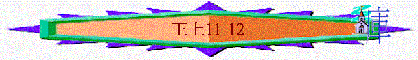

|
屬神國度的衰落 |
|||
|
二王—行神的旨意得堅固
|
二國—不專心順服終分裂
|
二先知—神能力彰顯仍剛硬
|
二結局—繼續行惡至終亡國
|
|
王上1-10 |
王上11-16 |
王上17-王下9:4 |
王下9:5-25:30 |
二.二國—不專心順服終分裂(11-16)
∼之前提及所羅門王國度的興盛及富強，但至11章後，以色列國開始衰落，而衰落的原因是他們不專心順服神，不守神的話
1.王國的分裂
A.所羅門----不專心跟從真神
a.他的失敗
(1)有神的賜福卻不滿足
「所羅門王在法老的女兒之外，又寵愛許多外邦女子，就是摩押女子、亞捫女子、以東女子、西頓女子、赫人女子。」11:1
「只是王不可為自己加添馬匹，也不可使百姓回埃及去，為要加添他的馬匹，因耶和華曾吩咐你們說：『不可再回那條路去。』他也不可為自己多立妃嬪，恐怕他的心偏邪；也不可為自己多積金銀。」申17:16-17
∼申命記已早吩咐作王的不可為自己多立或多增一些事情，但所羅門得神賜福後，有法老的女兒為妻，仍不滿足，仍多娶外族女子
(2)有神的警戒卻不儆醒
「論到這些國的人，耶和華曾曉諭以色列人說：「你們不可與他們往來相通，因為他們必誘惑你們的心去隨從他們的神。」所羅門卻戀愛這些女子。」11:2
∼神曾曉喻及警戒以色列人不可與外邦女子往來，免得他們的心被引誘，但所羅門卻沒有理會，不儆醒神的囑咐
(3)有神的智慧仍投網羅
∼他有屬天的智慧，應知道外邦女子能引誘他隨從別神，但很可惜，他仍自投網羅，被她們挾制
(4)有超越表現仍被引誘
「我又說：「以色列王所羅門不是在這樣的事上犯罪嗎？在多國中並沒有一王像他，且蒙他神所愛，神立他作以色列全國的王；然而連他也被外邦女子引誘犯罪。」尼13:26
∼世上沒有王像所羅門有超越的表現及智慧，但連他也受不了引誘，跟妃嬪敬拜事奉外幫的神，更何況我們呢？
(5)有愛神之心卻不恆久
「所羅門愛耶和華，遵行他父親大衛的律例，只是還在邱壇獻祭燒香。」王上3:3
「所羅門有妃七百，都是公主；還有嬪三百。這些妃嬪誘惑他的心。所羅門年老的時候，他的妃嬪誘惑他的心去隨從別神，不效法他父親大衛誠誠實實地順服耶和華他的神。」王上11:3-4
∼所羅門曾經愛耶和華，但到年老，他的心卻偏離，他愛神的心至終不長久
(6)有父的榜樣卻不效法
∼大衛過往是「誠誠實實」的順服神(原文作向神的心是純全)，他對神的心沒有偏差及含雜質，但所羅門卻沒有效法大衛，除神以外，也有別的
(7)有敬神表現卻不專一
「因為所羅門隨從西頓人的女神亞斯他錄和亞捫人可憎的神米勒公。所羅門行耶和華眼中看為惡的事，不效法他父親大衛專心順從耶和華。所羅門為摩押可憎的神基抹和亞捫人可憎的神摩洛，在耶路撒冷對面的山上建築邱壇。」11:5-7
∼「亞斯他錄」是迦南人所敬奉的假神，是巴力的妹妹，掌繁殖與爭戰的女神
∼「米勒公」與摩洛相同，有學者相信基抺也指同一神祇
∼所羅門為此等神選邱壇，而「耶路撒冷對面的山」應指橄欖山
∼所羅門曾經向真神獻祭多不勝數，但他對神卻不專心，又敬拜真神，又祭祠偶像
(8)有屬靈經歷仍不珍惜
「耶和華向所羅門發怒，因為他的心偏離向他兩次顯現的耶和華以色列的神。」11:9
∼不是所有人有所門羅如此經歷—神向他顯現2次，但他有此獨特經歷卻不珍惜，仍然偏離神
(9)蒙真神所愛卻偏離神
「我又說：「以色列王所羅門不是在這樣的事上犯罪嗎？在多國中並沒有一王像他，且蒙他神所愛，神立他作以色列全國的王；然而連他也被外邦女子引誘犯罪。」尼13:26
∼他是蒙神所愛，仍偏離愛他的神
(10)有神的吩咐卻不遵守
「耶和華向所羅門發怒，因為他的心偏離向他兩次顯現的耶和華以色列的神。」11:9
∼神曾與所羅門立約，但他卻沒有遵守，敬拜別神
b.所受惡果
(1)惹神發怒
「耶和華曾吩咐他不可隨從別神，他卻沒有遵守耶和華所吩咐的。」11:10
∼神曾愛所羅門，但他作了此事，神向他發怒
(2)國家分裂
「所以耶和華對他說：「你既行了這事，不遵守我所吩咐你守的約和律例，我必將你的國奪回，賜給你的臣子。然而，因你父親大衛的緣故，我不在你活著的日子行這事，必從你兒子的手中將國奪回。只是我不將全國奪回，要因我僕人大衛和我所選擇的耶路撒冷，還留一支派給你的兒子。」」11:11-13
「羅波安來到耶路撒冷，招聚猶大全家和便雅憫支派的人共十八萬，都是挑選的戰士，要與以色列家爭戰，好將國奪回，再歸所羅門的兒子羅波安。」12:21
「為西緬支派的人，按著宗族，拈出第二鬮。他們所得的地業是在猶大人地業中間。」書19:1
∼神要將所羅門的國奪回，但因大衛原故，所以還留一支派
∼因西緬和便雅憫在猶大支派地內，而便雅憫南部的人可能歸屬猶大，北部仍向北國效忠，所以其實南面是有猶大、西緬及便雅憫的
(3)仇敵攻擊
(A)以色列的兄弟----以東人哈達
「耶和華使以東人哈達興起，作所羅門的敵人；他是以東王的後裔。」11:14
「那時哈達還是幼童；他和他父親的臣僕，幾個以東人逃往埃及。」11:17
「哈達在法老面前大蒙恩惠，以致法老將王后答比匿的妹子賜他為妻。」11:19
「哈達在埃及聽見大衛與他列祖同睡，元帥約押也死了，就對法老說：「求王容我回本國去。」法老對他說：「你在我這裡有什麼缺乏，你竟要回你本國去呢？」他回答說：「我沒有缺乏什麼，只是求王容我回去。」」11:21-22
∼以色列原本是以東的兄弟，後來成為仇敵
∼在大衛時代，以東哈達逃往埃及，得法老支持，後來他返回以東，成為以色列的敵人
(B)外邦人----利遜
「神又使以利亞大的兒子利遜興起，作所羅門的敵人。他先前逃避主人瑣巴王哈大底謝。」11:23
「所羅門活著的時候，哈達為患之外，利遜也作以色列的敵人。他恨惡以色列人，且作了亞蘭人的王。」11:25
∼利遜也在大馬色興起作了亞蘭王，成為所羅門王的仇敵
(C)臣僕----耶羅波安
(a)臣子奪國的預定
「所以耶和華對他說：「你既行了這事，不遵守我所吩咐你守的約和律例，我必將你的國奪回，賜給你的臣子。」11:11
(b)耶羅波安的出現
「所羅門的臣僕、尼八的兒子耶羅波安也舉手攻擊王。他是以法蓮支派的洗利達人，他母親是寡婦，名叫洗魯阿。他舉手攻擊王的緣故，乃由先前所羅門建造米羅，修補他父親大衛城的破口。耶羅波安是大有才能的人。所羅門見這少年人殷勤，就派他監管約瑟家的一切工程。」11:26-28
∼耶羅波安的確是所羅門的臣子，他是以法蓮支派，是作監管約瑟家的工程，後來他會作叛亂
(c)先知親自的預告
＊奪回十支派
「一日，耶羅波安出了耶路撒冷，示羅人先知亞希雅在路上遇見他；亞希雅身上穿著一件新衣。他們二人在田野，以外並無別人。亞希雅將自己穿的那件新衣撕成十二片，對耶羅波安說：「你可以拿十片。耶和華以色列的神如此說：『我必將國從所羅門手裡奪回，將十個支派賜給你。」11:29-31
∼先知亞希雅用新衣撕成十二片，預告耶羅波安得十支派
∼除了西緬及猶大及部份便雅憫支派，其餘的屬耶羅波安，但利未支派不計在內，因利未人無產業
＊揀選他為王
「我必揀選你，使你照心裡一切所願的，作王治理以色列。」11:37
＊要遵守主命
「你若聽從我一切所吩咐你的，遵行我的道，行我眼中看為正的事，謹守我的律例誡命，像我僕人大衛所行的，我就與你同在，為你立堅固的家，像我為大衛所立的一樣，將以色列人賜給你。」11:38
(d)耶羅波安的逃亡
「所羅門因此想要殺耶羅波安。耶羅波安卻起身逃往埃及；到了埃及王示撒那裡，就住在埃及，直到所羅門死了。」11:40
c.王的壽終
「所羅門其餘的事，凡他所行的和他的智慧都寫在所羅門記上。所羅門在耶路撒冷作以色列眾人的王共四十年。」11:41-42
B.羅波安----不體恤他的百姓
a.民的苦情
「羅波安往示劍去；因為以色列人都到了示劍要立他作王。尼八的兒子耶羅波安先前躲避所羅門王，逃往埃及，住在那裡（他聽見這事。）以色列人打發人去請他來，他就和以色列會眾都來見羅波安，對他說：「你父親使我們負重軛，做苦工，現在求你使我們做的苦工、負的重軛輕鬆些，我們就事奉你。」」12:1-4
∼「示劍」位於以法蓮山地，在耶路撒冷以北
∼以色列人派耶羅波安請願，要求減輕他們的重軛(作苦役)
b.王的錯誤
(1)沒警覺耶羅波安之危
「所羅門因此想要殺耶羅波安。耶羅波安卻起身逃往埃及；到了埃及王示撒那裡，就住在埃及，直到所羅門死了。」11:40
∼即或所羅門想殺耶羅波安的行為是錯的，但至少所羅門也警覺耶羅波安這個人，但當羅波安登位，耶羅波安代表百姓求減輕他們重軛的事，羅波安也沒有任何防範的行動。
(2)沒想過舒解百姓之困
「羅波安對他們說：「你們暫且去，第三日再來見我。」民就去了。」王上
12:5
「羅波安之父所羅門在世的日子，有侍立在他面前的老年人，羅波安王和他們商議，說：「你們給我出個什麼主意，我好回覆這民。」王上
12:6
∼若他真是想舒解百姓之困，他一聽之後，可即回覆願減輕他們的重軛，他要用三日時間，問旁人意見，只是出一個主意，打發他們離去或回應他們的妄求
(3)不虛心聽從忠臣之言
老年人對他說：「現在王若服事這民如僕人，用好話回答他們，他們就永遠作王的僕人。」」12:6-7
∼王似乎要求老臣子給他意見，臣子勸王用好言及順從民意，令得民心，但卻王不聽
(4)不體恤明白子民之苦
「王卻不用老年人給他出的主意，就和那些與他一同長大、在他面前侍立的少年人商議，」12:8
(5)卻聽從以惡待眾之見
「那同他長大的少年人說：「這民對王說：『你父親使我們負重軛，求你使我們輕鬆些。』王要對他們如此說：『我的小拇指頭比我父親的腰還粗。我父親使你們負重軛，我必使你們負更重的軛！我父親用鞭子責打你們，我要用蠍子鞭責打你們！』」」12:10-11
「王用嚴厲的話回答百姓，不用老年人給他所出的主意，」12:13
∼他卻聽少年人的意見，不分是非，只用惡言對徒百姓，更想用更重的軛令他們受苦，作為一個領袖，不是挾制百姓，是以榜樣及仁義服事百姓的
(6)沒智慧建立會眾之心
「以色列眾民見王不依從他們，就對王說：我們與大衛有什麼分兒呢？與耶西的兒子並沒有關涉。以色列人哪，各回各家去吧！大衛家啊，自己顧自己吧！於是，以色列人都回自己家裡去了，」12:16
∼若王剛登基，應作一些舒解民困的政策，以建立人民之心，但羅波安卻沒有智慧，有如此回覆，令百姓對他更反感，惹來分裂王國之禍。
(7)乃出於耶和華神之意
「王不肯依從百姓，這事乃出於耶和華，為要應驗他藉示羅人亞希雅對尼八的兒子耶羅波安所說的話。」11:15
c.所受惡果
(1)以色列人背叛
「以色列眾民見王不依從他們，就對王說：我們與大衛有什麼分兒呢？與耶西的兒子並沒有關涉。以色列人哪，各回各家去吧！大衛家啊，自己顧自己吧！於是，以色列人都回自己家裡去了，」12:16
「這樣，以色列人背叛大衛家，直到今日。」12:19
(2)耶羅波安作王
「以色列眾人聽見耶羅波安回來了，就打發人去請他到會眾面前，立他作以色列眾人的王。除了猶大支派以外，沒有順從大衛家的。」12:20
(3)羅波安欲奪回
「羅波安來到耶路撒冷，招聚猶大全家和便雅憫支派的人共十八萬，都是挑選的戰士，要與以色列家爭戰，好將國奪回，再歸所羅門的兒子羅波安。」12:21
∼羅波安召集十八萬戰士，企圖收復失地
(4)耶和華的攔阻
「但神的話臨到神人示瑪雅，說：「你去告訴所羅門的兒子猶大王羅波安和猶大、便雅憫全家，並其餘的民說：『耶和華如此說：你們不可上去與你們的弟兄以色列人爭戰。各歸各家去吧！因為這事出於我。』」眾人就聽從耶和華的話，遵著耶和華的命回去了。」12:22-24
∼但神差神人示瑪雅阻止，說明這事是出於神，人當要聽從